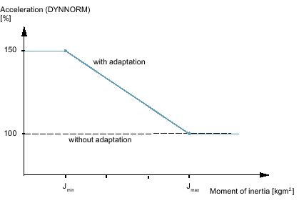

Benefits
The "Intelligent load adjustment" function is used to optimize the following characteristics of a machine tool by adapting dynamic response and control parameters:
-
Shorter processing times
-
Increased dynamic response
-
Greater accuracy
-
Enhanced precision
The machine manufacturer is supported in the commissioning of the function by dialogs on the user interface: "Commissioning" → softkey "NC" → Menu forward key → softkey"Adaptations" operating area. The softkey is shown after setting the option, and only for the "Manufacturer" access level.
Precondition
| | Software option In order to use this function a license is required for the following option: "Intelligent load adjustment" (6FC5800-0_S11-0Yx0) |
Function description
The"Intelligent load adjustment" function adjusts the dynamic response and control parameters to the current value of the moment of inertia or the mass of the axis. Adaptations are switched on and off by means of CYCLE782.
The following dynamic response and control parameters can be adapted:
Acceleration (dynamic mode)
Jerk (dynamic mode)
Servo gain factor (position control gain factor)
Torque feedforward control
Friction compensation value plus/minus
Adapting the friction compensation value is only possible for friction compensation with adaptive characteristics.
Amplitude of the nodding compensation (NOCO)
Drive adaptation factor 1...4: A maximum of 4 drive variables from parameter p2782[0...3] "Mode adaptation" can be adapted.
Example
For a rotary table with highly variable loading, the effective acceleration (DYNNORM) should be adapted to the current moment of inertia. The "Intelligent load adjustment" function is used to increase acceleration (DYNNORM) at minimal loading to 150 %.
|  | |
Jmin | ⇒ MD16506[0] $MN_CADAPT_INPUT_VALUE_1 |
Jmax | ⇒ MD16507[0] $MN_CADAPT_INPUT_VALUE_2 |
150% | ⇒ MD16508[0] $MN_CADAPT_OUTPUT_VALUE_1 |
100% | ⇒ MD16509[0] $MN_CADAPT_OUTPUT_VALUE_2 |
Constraints
You can determine the inertia of the axis using automatic servo tuning or the "Moment of inertia estimator" function module. The function module is enabled under Setup → Drive → Dialog "Configuration - Motor Module".
For the output variables "Drive adaptation factor 1...4", you configure a telegram type 146, 148 or 149 and activate function module "Controller parameter adaptation". You can find more information on the function module in the Function Manual SINAMICS S120 Drive Functions.
| Notice |
Sequence when optimizingAny adaptations should first be activated after commissioning and optimization of the machine have been completed. This prevents already adapted output values from having an impact on the optimization results. If the machine must be subsequently optimized, then adaptation can be temporarily deactivated. MD16501 = 0 for all indices. |